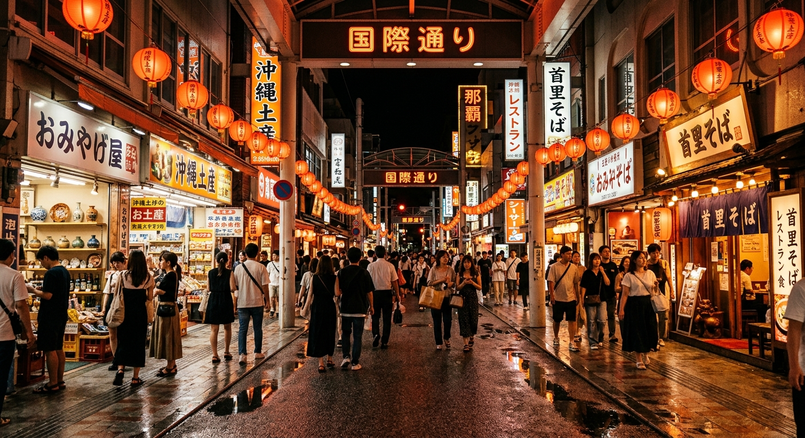

DAY 1
2026 / 11 / 14（六）
落地即進城：只留給燈籠與一碗麵
那霸機場 · 國際通 · 牧志
17:10
抵達那霸機場（國際線）
入境審查＋提領行李抓 45 分鐘。11 月非旺季，通關通常順暢，但週六傍晚仍可能排隊。
17:55
租車公司接駁＋取車
建議預約 18:00 取車。手續含車況講解、導航設定約 60 分鐘；先在櫃檯把 Mapcode 與 ETC 卡確認好再上路。
19:00
開車進那霸市區（約 20–25 分鐘 / 8 km）
走國道 331 號接 58 號。市區紅綠燈多，實際常比導航多 5–10 分鐘；週六晚間國際通周邊會塞。
19:30
飯店 check-in、卸行李
先把車停進飯店停車場（多為 1,000–1,500 円／晚），之後全程步行，不必再碰方向盤。
20:00
國際通晚餐 必去精華
阿古豬涮涮鍋、沖繩家常菜（島料理）、或市場旁的海葡萄丼。週六晚間熱門店要排 20–30 分鐘，可先線上訂位。
21:15
國際通夜散步
全長 1.6 公里，土產店多營業到 22:00；Blue Seal 冰淇淋當收尾。走累了就回飯店，明天才是重頭戲。
⚠ 為什麼第一天只剩這些
17:10 落地 → 通關 45 分 → 取車 60 分，最快也要 19:00 才能上路。首里城（17:30 停止入場）、壺屋陶器街（店家 18:00 前打烊）、牧志公設市場（多數攤位傍晚收）當天全部去不了，已全數移到 Day 4。今晚的任務只有一個：安全抵達飯店、吃飽、睡好。

國際通 · 落地第一晚的燈籠與人潮